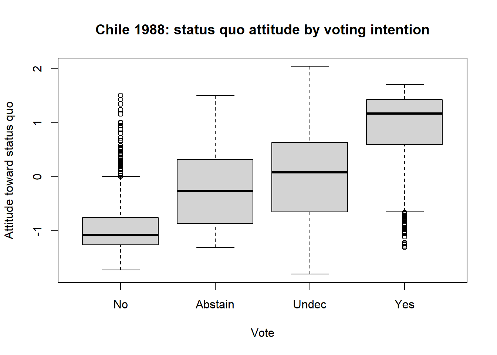
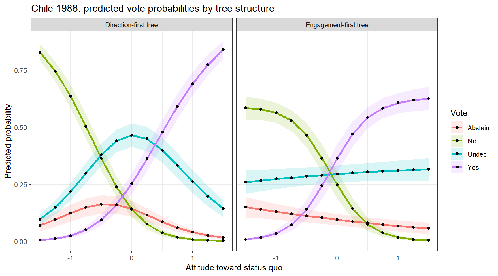
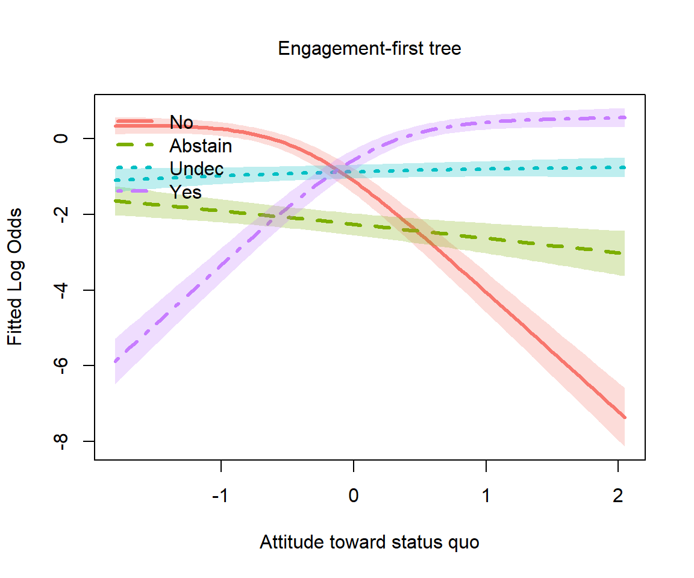
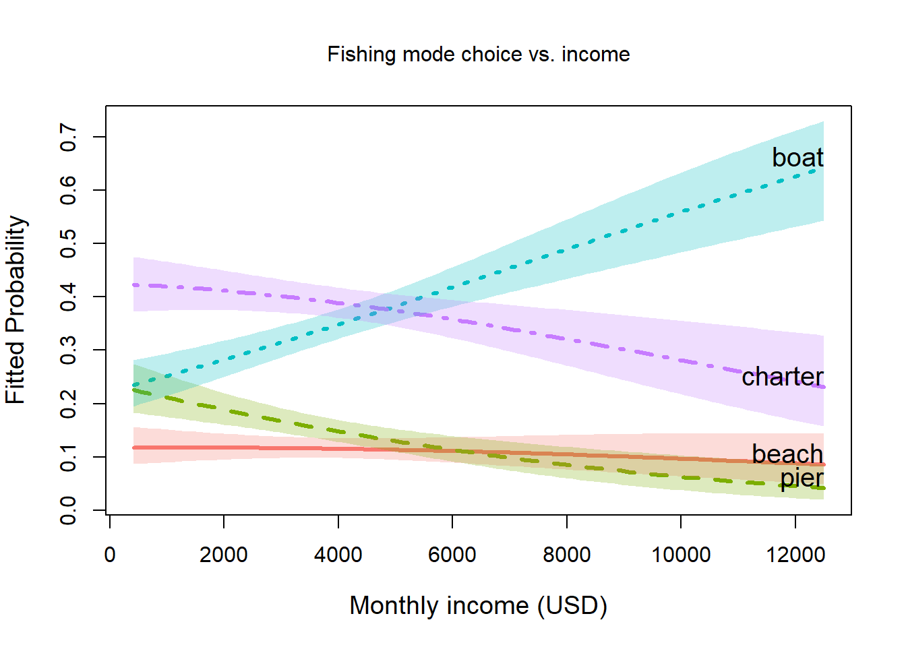
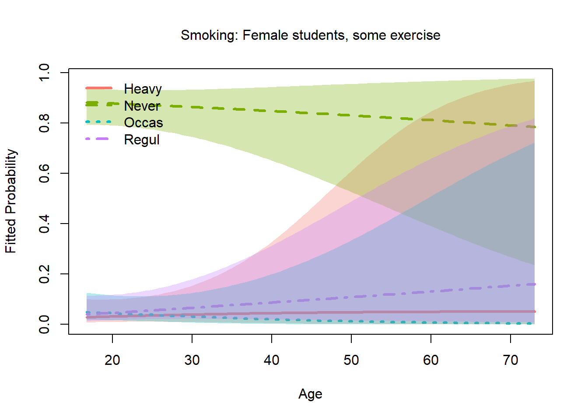

Other Examples of Nested Logit Models
Michael Friendly
2026-03-24
Source:vignettes/other-examples.Rmd
other-examples.RmdIntroduction
This document explores datasets beyond those already packaged with
nestedLogit (Womenlf, GSS,
gators, HealthInsurance) that could profit
from treatment as nested logit models, either because:
the response categories have a natural hierarchical tree structure and the independence-of-irrelevant-alternatives (IIA) assumption of plain multinomial logit is implausible across nests, or
the response is ordinal and continuation logits (a special case of nested dichotomies) are a natural model, and the proportional odds model (which assumes equal slopes for the predictors) might not be likely to hold.
From a scan of suitable datasets in available packages, the best candidates identified for this vignette are:
| Dataset | Package | Response levels | Structure | N |
|---|---|---|---|---|
Chile |
carData | Abstain/No/Undec/Yes | two competing trees | 2700 |
TravelMode |
AER | air/train/bus/car | IIA violation | 210 |
Fishing |
mlogit | beach/pier/boat/charter | shore vs. vessel | 1182 |
Arthritis |
vcd | None/Some/Marked | ordinal continuation | 84 |
survey$Smoke |
MASS | Never/Occas/Regul/Heavy | ordinal continuation | 237 |
pneumo |
VGAM | normal/mild/severe | ordinal continuation | 8 |
Polytomous response data comes in different forms (e.g., wide vs. long) so this vignette also provides an opportunity to illustrate transformations among these to make the data suitable for analysis and for plotting.
Chilean plebiscite voting intent (carData::Chile)
Data
The September, 1988 Chilean national plebiscite asked citizens
whether the military government of Augusto Pinochet should remain in
power for another eight years. Six months before that, the independent
research center FLASCO/Chile conducted a national survey of 27000
randomly selected voters. The main question concerned their intention to
vote (vote) in the plebiscite, which was recorded as:
- Yes (support Pinochet)
- No (oppose Pinochet)
- Undec (undecided)
- Abstain (abstain / not vote)
[The levels of Chile$vote are actually just the first
letters: “Y”, “N”, “U”, “A”. For ease of interpretation, these are
recoded in a step below.]
Chile is in carData, which is already a
Suggests: dependency of nestedLogit, so no extra package is
needed. One main predictor is a standardized scale of support for the
statusquo, where high values represent general support for
the policies of the military regime. Other predictors are:
sex, age, education (a factor)
and income of the respondents.
data("Chile", package = "carData")
str(Chile)
#> 'data.frame': 2700 obs. of 8 variables:
#> $ region : Factor w/ 5 levels "C","M","N","S",..: 3 3 3 3 3 3 3 3 3 3 ...
#> $ population: int 175000 175000 175000 175000 175000 175000 175000 175000 175000 175000 ...
#> $ sex : Factor w/ 2 levels "F","M": 2 2 1 1 1 1 2 1 1 2 ...
#> $ age : int 65 29 38 49 23 28 26 24 41 41 ...
#> $ education : Factor w/ 3 levels "P","PS","S": 1 2 1 1 3 1 2 3 1 1 ...
#> $ income : int 35000 7500 15000 35000 35000 7500 35000 15000 15000 15000 ...
#> $ statusquo : num 1.01 -1.3 1.23 -1.03 -1.1 ...
#> $ vote : Factor w/ 4 levels "A","N","U","Y": 4 2 4 2 2 2 2 2 3 2 ...The dataset contains missing values on a number of predictors, but there were 168 cases who did not answer the voting intention question. These are dropped here, so that all models use the same cases.
colSums(is.na(Chile))
#> region population sex age education income statusquo
#> 0 0 0 1 11 98 17
#> vote
#> 168
# Drop the 168 rows with missing vote so all models use the same cases
chile <- Chile[!is.na(Chile$vote), ]
# Recode vote with longer labels, ordered by median statusquo (No < Abstain < Undec < Yes)
chile$vote <- factor(chile$vote,
levels = c("N", "A", "U", "Y"),
labels = c("No", "Abstain", "Undec", "Yes"))
nrow(chile)
#> [1] 2532
table(chile$vote)
#>
#> No Abstain Undec Yes
#> 889 187 588 868The strong predictor statusquo is a scale measuring
attitude toward the political status quo (higher = more supportive of
Pinochet’s regime).
# statusquo distribution by vote
boxplot(statusquo ~ vote, data = chile,
xlab = "Vote", ylab = "Attitude toward status quo",
main = "Chile 1988: status quo attitude by voting intention")
With this reordering of the response levels, a clear pattern emerges in the boxplot. But, also note how the shapes of the distributions change, and the presence of outliers. But here, the goal is to explain voting intention using the other predictors.
Two competing tree structures
The four vote categories may seem to be unordered in the
general case. However, we can think more productively about the
underlying process for a respondent that leads to their choice. A key
theoretical question is the ordering of the decision
process, which gives rise to two different sets of nested
comparisons.
Engagement-first tree
The voter first decides whether to participate meaningfully (cast a Yes or No vote) vs. disengage (Abstain or remain Undecided). Engagement is then governed by demographic/civic variables; direction by political attitude.
vote
/ \
engaged disengaged
/ \ / \
Yes No Abstain UndecWe specify this as three nested dichotomies:
dichots_eng <- logits(
engage = dichotomy(engaged = c("Yes", "No"),
disengaged = c("Abstain", "Undec")),
direction = dichotomy("Yes", "No"),
disengage = dichotomy("Abstain", "Undec")
)
# print method
dichots_eng
#> engage: engaged{Yes, No} vs. disengaged{Abstain, Undec}
#> direction: {Yes} vs. {No}
#> disengage: {Abstain} vs. {Undec}
# print as an ASCII tree
as.tree(dichots_eng, response = "vote")
#> vote
#> / \
#> engaged disengaged
#> / \ / \
#> Yes No Abstain UndecDirection-first tree
The voter first forms a political opinion (pro or anti status quo)
and only then decides whether to act on it. statusquo
should dominate the direction split; demographics should govern the two
engagement splits.
vote
/ \
pro anti
/ \ / \
Yes Undec No AbstainThese dichotomies are specified as follows:
dichots_dir <- logits(
direction = dichotomy(pro = c("Yes", "Undec"),
anti = c("No", "Abstain")),
engage_pro = dichotomy("Yes", "Undec"),
engage_ant = dichotomy("No", "Abstain")
)
dichots_dir
#> direction: pro{Yes, Undec} vs. anti{No, Abstain}
#> engage_pro: {Yes} vs. {Undec}
#> engage_ant: {No} vs. {Abstain}Fitting the models
For comparison, we can fit the standard multinomial logistic
regression models (using "N" as the baseline category) and
the two nested dichotomy models. I use the main effects of the principal
predictors (ignoring region and population) in
all three models.
mod.formula <- vote ~ statusquo + age + sex + education + income
# Multinomial logit baseline (reference = "No")
chile2 <- within(chile, vote <- relevel(vote, ref = "No"))
chile_multi <- multinom(mod.formula, data = chile2, trace = FALSE)
# Nested logit: engagement-first tree
chile_eng <- nestedLogit(mod.formula, dichotomies = dichots_eng, data = chile)
# Nested logit: direction-first tree
chile_dir <- nestedLogit(mod.formula, dichotomies = dichots_dir, data = chile)Details of this analysis are provided by summary(),
which provides tests of coefficients as well as overall measures of fit
(residual deviance) for each dichotomy as well as for the combined
models comprising all four vote choices. This output is suppressed
here
Omnibus tests
car::Anova() gives
tests for each term in the submodels for the dichotomies as well as
tests for these terms in the combined model.
Anova(chile_eng)
#>
#> Analysis of Deviance Tables (Type II tests)
#>
#> Response engage: engaged{Yes, No} vs. disengaged{Abstain, Undec}
#> LR Chisq Df Pr(>Chisq)
#> statusquo 1.3414 1 0.2467943
#> age 0.7603 1 0.3832292
#> sex 26.2651 1 2.976e-07 ***
#> education 15.7693 2 0.0003765 ***
#> income 11.6642 1 0.0006371 ***
#> ---
#> Signif. codes: 0 '***' 0.001 '**' 0.01 '*' 0.05 '.' 0.1 ' ' 1
#>
#>
#> Response direction: {Yes} vs. {No}
#> LR Chisq Df Pr(>Chisq)
#> statusquo 1530.80 1 < 2.2e-16 ***
#> age 0.03 1 0.866346
#> sex 8.06 1 0.004522 **
#> education 9.96 2 0.006888 **
#> income 0.71 1 0.398223
#> ---
#> Signif. codes: 0 '***' 0.001 '**' 0.01 '*' 0.05 '.' 0.1 ' ' 1
#>
#>
#> Response disengage: {Abstain} vs. {Undec}
#> LR Chisq Df Pr(>Chisq)
#> statusquo 10.8037 1 0.001013 **
#> age 16.0449 1 6.186e-05 ***
#> sex 3.2513 1 0.071368 .
#> education 9.1231 2 0.010446 *
#> income 0.7965 1 0.372148
#> ---
#> Signif. codes: 0 '***' 0.001 '**' 0.01 '*' 0.05 '.' 0.1 ' ' 1
#>
#>
#> Combined Responses
#> LR Chisq Df Pr(>Chisq)
#> statusquo 1542.95 3 < 2.2e-16 ***
#> age 16.83 3 0.0007647 ***
#> sex 37.58 3 3.472e-08 ***
#> education 34.85 6 4.611e-06 ***
#> income 13.17 3 0.0042743 **
#> ---
#> Signif. codes: 0 '***' 0.001 '**' 0.01 '*' 0.05 '.' 0.1 ' ' 1
Anova(chile_dir)
#>
#> Analysis of Deviance Tables (Type II tests)
#>
#> Response direction: pro{Yes, Undec} vs. anti{No, Abstain}
#> LR Chisq Df Pr(>Chisq)
#> statusquo 1258.66 1 < 2.2e-16 ***
#> age 16.01 1 6.307e-05 ***
#> sex 32.93 1 9.547e-09 ***
#> education 21.40 2 2.253e-05 ***
#> income 3.14 1 0.07658 .
#> ---
#> Signif. codes: 0 '***' 0.001 '**' 0.01 '*' 0.05 '.' 0.1 ' ' 1
#>
#>
#> Response engage_pro: {Yes} vs. {Undec}
#> LR Chisq Df Pr(>Chisq)
#> statusquo 407.74 1 < 2e-16 ***
#> age 2.80 1 0.09397 .
#> sex 1.42 1 0.23359
#> education 1.78 2 0.41054
#> income 4.97 1 0.02583 *
#> ---
#> Signif. codes: 0 '***' 0.001 '**' 0.01 '*' 0.05 '.' 0.1 ' ' 1
#>
#>
#> Response engage_ant: {No} vs. {Abstain}
#> LR Chisq Df Pr(>Chisq)
#> statusquo 166.552 1 < 2.2e-16 ***
#> age 0.491 1 0.4834296
#> sex 11.660 1 0.0006386 ***
#> education 3.463 2 0.1770562
#> income 1.772 1 0.1831203
#> ---
#> Signif. codes: 0 '***' 0.001 '**' 0.01 '*' 0.05 '.' 0.1 ' ' 1
#>
#>
#> Combined Responses
#> LR Chisq Df Pr(>Chisq)
#> statusquo 1832.96 3 < 2.2e-16 ***
#> age 19.30 3 0.0002365 ***
#> sex 46.01 3 5.643e-10 ***
#> education 26.64 6 0.0001688 ***
#> income 9.88 3 0.0196527 *
#> ---
#> Signif. codes: 0 '***' 0.001 '**' 0.01 '*' 0.05 '.' 0.1 ' ' 1Which tree fits better?
Both nested models and the multinomial model have identical parameter counts (5 predictors × 3 sub-models = 15 slopes plus 3 intercepts), so AIC is a fair comparison.
data.frame(
model = c("Multinomial", "Engagement tree", "Direction tree"),
logLik = c(logLik(chile_multi), logLik(chile_eng), logLik(chile_dir)),
AIC = c(AIC(chile_multi), AIC(chile_eng), AIC(chile_dir))
)
#> model logLik AIC
#> 1 Multinomial -2018.685 4079.370
#> 2 Engagement tree -2172.343 4386.686
#> 3 Direction tree -2027.276 4096.553The direction-first tree should fit better (as it does) if
statusquo is primarily a predictor of political opinion
(Y/N vs. U/A) rather than of engagement. We can check this by inspecting
the statusquo coefficients in each sub-model of the
engagement tree: they should be large in direction and
small in engage and disengage.
Pseudo-R² measures
RSQ() provides a more detailed picture, showing how much
of the variance in each dichotomy is accounted for by the
predictors.
RSQ(chile_eng, include = c("AIC", "n"))
#> Pseudo R² measures for nestedLogit model chile_eng:
#> vote ~ statusquo + age + sex + education + income
#>
#> response McFadden CoxSnell Nagelkerke AIC n
#> engage 0.026 0.031 0.044 2905.066 2431
#> direction 0.700 0.621 0.828 721.517 1703
#> disengage 0.076 0.081 0.121 760.103 728
#> -----------------------------------------------------
#> Combined 0.292 0.507 0.556 4386.686 2532
RSQ(chile_dir, include = c("AIC", "n"))
#> Pseudo R² measures for nestedLogit model chile_dir:
#> vote ~ statusquo + age + sex + education + income
#>
#> response McFadden CoxSnell Nagelkerke AIC n
#> direction 0.435 0.448 0.602 1890.377 2431
#> engage_pro 0.239 0.275 0.372 1432.054 1387
#> engage_ant 0.200 0.167 0.279 774.121 1044
#> ------------------------------------------------------
#> Combined 0.339 0.560 0.615 4096.553 2532The contrast between the two trees is striking. In the
engagement-first tree, the direction sub-model (Yes vs. No,
given engagement) has the highest R² by far, reflecting the dominant
role of statusquo in distinguishing supporters from
opponents once engagement is decided. The engage and
disengage sub-models have much lower R², because the
predictors do a poorer job of explaining who opts out of the vote.
In the direction-first tree, the top-level direction
split (pro vs. anti status quo) achieves the highest R² of any single
sub-model across both trees, consistent with statusquo
being primarily a political-orientation predictor. The two engagement
sub-models within each side (engage_pro,
engage_ant) have lower R², as expected.
The higher Combined R² for the direction-first tree confirms the AIC
comparison above: structuring the tree so that statusquo
governs the first split yields a better-fitting and more interpretable
model.
Predicted probabilities
To visualize these models, it is useful to calculate the predicted
probabilities of vote choice over a range of predictor
values, holding constant (averaging over) the predictor we don’t want to
display in a given plot
new_chile <- data.frame(
statusquo = seq(-1.5, 1.5, by = 0.25),
age = median(chile$age, na.rm = TRUE),
sex = factor("F", levels = levels(chile$sex)),
education = factor("S", levels = levels(chile$education)),
income = median(chile$income, na.rm = TRUE)
)We can get the predicted probabilities for these separate models for
the dichotomies using predict.nestedLogit() and turning
these into data frames for plotting with ggplot2.
pred_eng <- as.data.frame(predict(chile_eng, newdata = new_chile))
pred_dir <- as.data.frame(predict(chile_dir, newdata = new_chile))
# as.data.frame() returns long format: one row per (observation × response level)
# with predictor columns, plus 'response', 'p', 'se.p', 'logit', 'se.logit'
pred_long <- rbind(
transform(pred_eng, model = "Engagement-first tree"),
transform(pred_dir, model = "Direction-first tree")
)
ggplot(pred_long, aes(x = statusquo, y = p, colour = response, fill = response)) +
geom_ribbon(aes(ymin = pmax(0, p - 1.96 * se.p),
ymax = pmin(1, p + 1.96 * se.p)),
alpha = 0.15, colour = NA) +
geom_line(linewidth = 1.2) +
geom_point(color = "blacK") +
facet_wrap(~ model) +
labs(x = "Attitude toward status quo",
y = "Predicted probability",
colour = "Vote", fill = "Vote",
title = "Chile 1988: predicted vote probabilities by tree structure") +
theme_bw()
This is substantively interesting, because the two different structures for the dichotomy comparisons give quite different views of the predictions from the models.
Plotting logits
Using the plot.nestedLogit() method, we can also show
these on the logit scale, using the scale = "logit"
argument. The others argument allows us to condition on
(average over) values of the variables not shown in this plot. There are
other niceties, not shown here, such as using direct labels on the
curves (label = TRUE, label.x) rather than a
legend.
# Logit-scale plot using the new scale= argument
plot(chile_eng, "statusquo",
others = list(age = median(chile$age, na.rm = TRUE),
sex = "F",
education = "S",
income = median(chile$income, na.rm = TRUE)),
scale = "logit",
xlab = "Attitude toward status quo",
main = "Engagement-first tree")
Travel mode choice (AER::TravelMode)
The dataset AER::TravelMode is a classic in
econometrics, originally from Greene
(2003). It relates to the mode of travel chosen by individuals
for travel between Sydney and Melbourne, Australia.
- Do they choose to go by “car”, “air”, “train”, or “bus”?
- How do variables like cost, waiting time, household income influence that choice?
This section requires the AER and dplyr
packages.
library(AER)
library(dplyr)
data("TravelMode", package = "AER")
str(TravelMode)
#> 'data.frame': 840 obs. of 9 variables:
#> $ individual: Factor w/ 210 levels "1","2","3","4",..: 1 1 1 1 2 2 2 2 3 3 ...
#> $ mode : Factor w/ 4 levels "air","train",..: 1 2 3 4 1 2 3 4 1 2 ...
#> $ choice : Factor w/ 2 levels "no","yes": 1 1 1 2 1 1 1 2 1 1 ...
#> $ wait : int 69 34 35 0 64 44 53 0 69 34 ...
#> $ vcost : int 59 31 25 10 58 31 25 11 115 98 ...
#> $ travel : int 100 372 417 180 68 354 399 255 125 892 ...
#> $ gcost : int 70 71 70 30 68 84 85 50 129 195 ...
#> $ income : int 35 35 35 35 30 30 30 30 40 40 ...
#> $ size : int 1 1 1 1 2 2 2 2 1 1 ...Data structure
TravelMode is in long format: 840 rows
= 210 individuals × 4 travel alternatives (air, train, bus, car).
Variables such as wait and gcost are
alternative-specific — they differ across modes for the same
individual.
nestedLogit() requires one row per
individual with the chosen mode as the response. Only
individual-specific predictors (income,
size) work here directly; alternative-specific costs would
require a different approach.
Nesting structure
The canonical nested structure separates private (car) from public transit, then within public separates air from ground, then train from bus. This reflects the IIA problem: adding a near-identical alternative (e.g., a second bus service) should not equally reduce the probability of choosing car.
travel_dichots <- logits(
pvt_pub = dichotomy("car", public = c("air", "train", "bus")),
air_grnd = dichotomy("air", ground = c("train", "bus")),
tr_bus = dichotomy("train", "bus")
)
travel_dichots
#> pvt_pub: {car} vs. public{air, train, bus}
#> air_grnd: {air} vs. ground{train, bus}
#> tr_bus: {train} vs. {bus}Fitting
tm_multi <- multinom(mode ~ income + size, data = tm, trace = FALSE)
tm_nested <- nestedLogit(mode ~ income + size,
dichotomies = travel_dichots,
data = tm)
summary(tm_nested)
#> Nested logit models: mode ~ income + size
#>
#> Response pvt_pub: {car} vs. public{air, train, bus}
#> Call:
#> glm(formula = pvt_pub ~ income + size, family = binomial, data = tm,
#> contrasts = contrasts)
#>
#> Coefficients:
#> Estimate Std. Error z value Pr(>|z|)
#> (Intercept) 2.826386 0.456924 6.186 6.18e-10 ***
#> income -0.024565 0.008494 -2.892 0.003828 **
#> size -0.533381 0.157070 -3.396 0.000684 ***
#> ---
#> Signif. codes: 0 '***' 0.001 '**' 0.01 '*' 0.05 '.' 0.1 ' ' 1
#>
#> (Dispersion parameter for binomial family taken to be 1)
#>
#> Null deviance: 249.42 on 209 degrees of freedom
#> Residual deviance: 224.66 on 207 degrees of freedom
#> AIC: 230.66
#>
#> Number of Fisher Scoring iterations: 4
#>
#> Response air_grnd: {air} vs. ground{train, bus}
#> Call:
#> glm(formula = air_grnd ~ income + size, family = binomial, data = tm,
#> contrasts = contrasts)
#>
#> Coefficients:
#> Estimate Std. Error z value Pr(>|z|)
#> (Intercept) 2.11434 0.53025 3.987 6.68e-05 ***
#> income -0.04745 0.01011 -4.693 2.69e-06 ***
#> size -0.04371 0.21852 -0.200 0.841
#> ---
#> Signif. codes: 0 '***' 0.001 '**' 0.01 '*' 0.05 '.' 0.1 ' ' 1
#>
#> (Dispersion parameter for binomial family taken to be 1)
#>
#> Null deviance: 201.14 on 150 degrees of freedom
#> Residual deviance: 174.72 on 148 degrees of freedom
#> (59 observations deleted due to missingness)
#> AIC: 180.72
#>
#> Number of Fisher Scoring iterations: 4
#>
#> Response tr_bus: {train} vs. {bus}
#> Call:
#> glm(formula = tr_bus ~ income + size, family = binomial, data = tm,
#> contrasts = contrasts)
#>
#> Coefficients:
#> Estimate Std. Error z value Pr(>|z|)
#> (Intercept) -0.43907 0.59320 -0.740 0.4592
#> income 0.02628 0.01347 1.951 0.0511 .
#> size -0.67379 0.34932 -1.929 0.0538 .
#> ---
#> Signif. codes: 0 '***' 0.001 '**' 0.01 '*' 0.05 '.' 0.1 ' ' 1
#>
#> (Dispersion parameter for binomial family taken to be 1)
#>
#> Null deviance: 116.96 on 92 degrees of freedom
#> Residual deviance: 109.45 on 90 degrees of freedom
#> (117 observations deleted due to missingness)
#> AIC: 115.45
#>
#> Number of Fisher Scoring iterations: 4
Anova(tm_nested)
#>
#> Analysis of Deviance Tables (Type II tests)
#>
#> Response pvt_pub: {car} vs. public{air, train, bus}
#> LR Chisq Df Pr(>Chisq)
#> income 8.6956 1 0.0031898 **
#> size 12.1719 1 0.0004852 ***
#> ---
#> Signif. codes: 0 '***' 0.001 '**' 0.01 '*' 0.05 '.' 0.1 ' ' 1
#>
#>
#> Response air_grnd: {air} vs. ground{train, bus}
#> LR Chisq Df Pr(>Chisq)
#> income 26.4152 1 2.754e-07 ***
#> size 0.0398 1 0.8418
#> ---
#> Signif. codes: 0 '***' 0.001 '**' 0.01 '*' 0.05 '.' 0.1 ' ' 1
#>
#>
#> Response tr_bus: {train} vs. {bus}
#> LR Chisq Df Pr(>Chisq)
#> income 3.9221 1 0.04765 *
#> size 4.5405 1 0.03310 *
#> ---
#> Signif. codes: 0 '***' 0.001 '**' 0.01 '*' 0.05 '.' 0.1 ' ' 1
#>
#>
#> Combined Responses
#> LR Chisq Df Pr(>Chisq)
#> income 39.033 3 1.708e-08 ***
#> size 16.752 3 0.0007947 ***
#> ---
#> Signif. codes: 0 '***' 0.001 '**' 0.01 '*' 0.05 '.' 0.1 ' ' 1Predicted probabilities
new_tm <- data.frame(income = seq(10, 60, by = 10), size = 1)
# as.data.frame() returns long format; reshape to wide for comparison
pred_tm_nested_long <- as.data.frame(predict(tm_nested, newdata = new_tm))
nested_wide <- reshape(
pred_tm_nested_long[, c("income", "size", "response", "p")],
idvar = c("income", "size"),
timevar = "response",
direction = "wide"
)
names(nested_wide) <- sub("^p\\.", "", names(nested_wide))
pred_tm_multi <- as.data.frame(predict(tm_multi, newdata = new_tm,
type = "probs"))
cat("Nested logit:\n")
#> Nested logit:
cbind(income = new_tm$income, round(nested_wide[, levels(tm$mode)], 3))
#> income car air train bus
#> 1 10 0.114 0.149 0.516 0.221
#> 5 20 0.142 0.211 0.416 0.231
#> 9 30 0.174 0.284 0.315 0.227
#> 13 40 0.212 0.360 0.220 0.207
#> 17 50 0.256 0.427 0.142 0.174
#> 21 60 0.306 0.475 0.084 0.134
cat("Multinomial logit:\n")
#> Multinomial logit:
cbind(income = new_tm$income, round(pred_tm_multi[, levels(tm$mode)], 3))
#> income car air train bus
#> 1 10 0.105 0.153 0.524 0.218
#> 2 20 0.145 0.220 0.411 0.224
#> 3 30 0.189 0.296 0.301 0.215
#> 4 40 0.229 0.372 0.206 0.192
#> 5 50 0.263 0.442 0.133 0.163
#> 6 60 0.287 0.500 0.082 0.131Fishing mode choice (mlogit::Fishing)
Another classic econometric dataset amenable to nested dichotomies treatment concerns the choice by recreational anglers among different modes of fishing: from a beach or pier, or on a boat, that could be private or a charter.
The dataset is from Herriges & Kling (1999); see also Cameron & Trivedi (2005) for an econometric treatment that also considers the cost of fishing by these modes and also the expected catch associated with each. Models for such response-specific predictors are interesting, but outside the scope of our nested logit models.
This section requires the mlogit package for the
dataset.
data("Fishing", package = "mlogit")
str(Fishing)
#> 'data.frame': 1182 obs. of 10 variables:
#> $ mode : Factor w/ 4 levels "beach","pier",..: 4 4 3 2 3 4 1 4 3 3 ...
#> $ price.beach : num 157.9 15.1 161.9 15.1 106.9 ...
#> $ price.pier : num 157.9 15.1 161.9 15.1 106.9 ...
#> $ price.boat : num 157.9 10.5 24.3 55.9 41.5 ...
#> $ price.charter: num 182.9 34.5 59.3 84.9 71 ...
#> $ catch.beach : num 0.0678 0.1049 0.5333 0.0678 0.0678 ...
#> $ catch.pier : num 0.0503 0.0451 0.4522 0.0789 0.0503 ...
#> $ catch.boat : num 0.26 0.157 0.241 0.164 0.108 ...
#> $ catch.charter: num 0.539 0.467 1.027 0.539 0.324 ...
#> $ income : num 7083 1250 3750 2083 4583 ...Overview
1182 US recreational anglers each chose one of four fishing modes:
beach, pier, boat,
charter. The natural nesting separates shore-based
from vessel-based alternatives:
fishing
/ \
shore vessel
/ \ / \
beach pier boat charterShore-based modes share unobserved attributes (no boat required, lower cost and commitment) that vessel-based modes do not, so IIA is plausible within but not across groups.
Unlike AER::TravelMode, mlogit::Fishing is
already in wide format — one row per individual — with
mode indicating the chosen alternative and
income as the only individual-specific predictor. The
price.* and catch.* variables are
alternative-specific (one column per mode) and cannot be used
directly with nestedLogit(), which expects predictors that
apply to the individual, not to each alternative. A full
conditional-logit model (e.g., via mlogit::mlogit()) would
be needed to exploit those variables.
fishing_dichots <- logits(
shore_vessel = dichotomy(shore = c("beach", "pier"),
vessel = c("boat", "charter")),
shore_type = dichotomy("beach", "pier"),
vessel_type = dichotomy("boat", "charter")
)
fishing_dichots
#> shore_vessel: shore{beach, pier} vs. vessel{boat, charter}
#> shore_type: {beach} vs. {pier}
#> vessel_type: {boat} vs. {charter}
as.tree(fishing_dichots, response = "mode")
#> mode
#> / \
#> shore vessel
#> / \ / \
#> beach pier boat charterFit the model and show the summaries for the dichotomies:
fish_nested <- nestedLogit(mode ~ income,
dichotomies = fishing_dichots,
data = Fishing)
summary(fish_nested)
#> Nested logit models: mode ~ income
#>
#> Response shore_vessel: shore{beach, pier} vs. vessel{boat, charter}
#> Call:
#> glm(formula = shore_vessel ~ income, family = binomial, data = Fishing,
#> contrasts = contrasts)
#>
#> Coefficients:
#> Estimate Std. Error z value Pr(>|z|)
#> (Intercept) 6.096e-01 1.310e-01 4.652 3.29e-06 ***
#> income 1.054e-04 2.977e-05 3.539 0.000401 ***
#> ---
#> Signif. codes: 0 '***' 0.001 '**' 0.01 '*' 0.05 '.' 0.1 ' ' 1
#>
#> (Dispersion parameter for binomial family taken to be 1)
#>
#> Null deviance: 1364.4 on 1181 degrees of freedom
#> Residual deviance: 1350.9 on 1180 degrees of freedom
#> AIC: 1354.9
#>
#> Number of Fisher Scoring iterations: 4
#>
#> Response shore_type: {beach} vs. {pier}
#> Call:
#> glm(formula = shore_type ~ income, family = binomial, data = Fishing,
#> contrasts = contrasts)
#>
#> Coefficients:
#> Estimate Std. Error z value Pr(>|z|)
#> (Intercept) 7.037e-01 2.126e-01 3.310 0.000932 ***
#> income -1.135e-04 4.817e-05 -2.356 0.018495 *
#> ---
#> Signif. codes: 0 '***' 0.001 '**' 0.01 '*' 0.05 '.' 0.1 ' ' 1
#>
#> (Dispersion parameter for binomial family taken to be 1)
#>
#> Null deviance: 426.30 on 311 degrees of freedom
#> Residual deviance: 420.58 on 310 degrees of freedom
#> (870 observations deleted due to missingness)
#> AIC: 424.58
#>
#> Number of Fisher Scoring iterations: 4
#>
#> Response vessel_type: {boat} vs. {charter}
#> Call:
#> glm(formula = vessel_type ~ income, family = binomial, data = Fishing,
#> contrasts = contrasts)
#>
#> Coefficients:
#> Estimate Std. Error z value Pr(>|z|)
#> (Intercept) 6.416e-01 1.408e-01 4.556 5.20e-06 ***
#> income -1.329e-04 2.922e-05 -4.546 5.47e-06 ***
#> ---
#> Signif. codes: 0 '***' 0.001 '**' 0.01 '*' 0.05 '.' 0.1 ' ' 1
#>
#> (Dispersion parameter for binomial family taken to be 1)
#>
#> Null deviance: 1204.7 on 869 degrees of freedom
#> Residual deviance: 1182.9 on 868 degrees of freedom
#> (312 observations deleted due to missingness)
#> AIC: 1186.9
#>
#> Number of Fisher Scoring iterations: 4
Anova(fish_nested)
#>
#> Analysis of Deviance Tables (Type II tests)
#>
#> Response shore_vessel: shore{beach, pier} vs. vessel{boat, charter}
#> LR Chisq Df Pr(>Chisq)
#> income 13.54 1 0.0002336 ***
#> ---
#> Signif. codes: 0 '***' 0.001 '**' 0.01 '*' 0.05 '.' 0.1 ' ' 1
#>
#>
#> Response shore_type: {beach} vs. {pier}
#> LR Chisq Df Pr(>Chisq)
#> income 5.7213 1 0.01676 *
#> ---
#> Signif. codes: 0 '***' 0.001 '**' 0.01 '*' 0.05 '.' 0.1 ' ' 1
#>
#>
#> Response vessel_type: {boat} vs. {charter}
#> LR Chisq Df Pr(>Chisq)
#> income 21.891 1 2.885e-06 ***
#> ---
#> Signif. codes: 0 '***' 0.001 '**' 0.01 '*' 0.05 '.' 0.1 ' ' 1
#>
#>
#> Combined Responses
#> LR Chisq Df Pr(>Chisq)
#> income 41.152 3 6.07e-09 ***
#> ---
#> Signif. codes: 0 '***' 0.001 '**' 0.01 '*' 0.05 '.' 0.1 ' ' 1Plots
Again, the plot.nestedLogit() gives an interpretable
plot of the response probabilities:
plot(fish_nested, x.var = "income",
xlab = "Monthly income (USD)",
main = "Fishing mode choice vs. income",
label=TRUE, label.col="black",
cex.lab = 1.2)
- Fishing from the beach is a low-probability choice, which doesn’t vary much with income.
- Fishing from a pier is next overall, followed by charter fishing. Both of these decline with income.
- The tendency to fish from a private boat (yours or friend’s) increases dramatically with income.
Arthritis treatment outcome (vcd::Arthritis)
data("Arthritis", package = "vcd")
str(Arthritis)
#> 'data.frame': 84 obs. of 5 variables:
#> $ ID : int 57 46 77 17 36 23 75 39 33 55 ...
#> $ Treatment: Factor w/ 2 levels "Placebo","Treated": 2 2 2 2 2 2 2 2 2 2 ...
#> $ Sex : Factor w/ 2 levels "Female","Male": 2 2 2 2 2 2 2 2 2 2 ...
#> $ Age : int 27 29 30 32 46 58 59 59 63 63 ...
#> $ Improved : Ord.factor w/ 3 levels "None"<"Some"<..: 2 1 1 3 3 3 1 3 1 1 ...
table(Arthritis$Improved)
#>
#> None Some Marked
#> 42 14 28Overview
84 patients in a double-blind clinical trial received either an
active treatment or a placebo (Treatment). They are
classified by Sex and Age. The outcome
Improved is ordinal, with levels “None”, “Some” or
“Marked” improvement.
Simpler analyses of these data consider only the dichotomy (“Improved”) between “None” and the other categories.
Improved
/ \
None Any improvement
/ \
Some MarkedContinuation logits are natural here: dichotomy 1 asks whether the patient improved at all; dichotomy 2 asks, given improvement, whether it was marked rather than merely some. Treated patients should have higher probabilities at both transitions.
arth_dichots <- continuationLogits(c("None", "Some", "Marked"))
arth_dichots
#> above_None: {None} vs. {Some, Marked}
#> above_Some: {Some} vs. {Marked}
arth_nested <- nestedLogit(Improved ~ Treatment + Sex + Age,
dichotomies = arth_dichots,
data = Arthritis)
summary(arth_nested)
#> Nested logit models: Improved ~ Treatment + Sex + Age
#>
#> Response above_None: {None} vs. {Some, Marked}
#> Call:
#> glm(formula = above_None ~ Treatment + Sex + Age, family = binomial,
#> data = Arthritis, contrasts = contrasts)
#>
#> Coefficients:
#> Estimate Std. Error z value Pr(>|z|)
#> (Intercept) -3.01546 1.16777 -2.582 0.00982 **
#> TreatmentTreated 1.75980 0.53650 3.280 0.00104 **
#> SexMale -1.48783 0.59477 -2.502 0.01237 *
#> Age 0.04875 0.02066 2.359 0.01832 *
#> ---
#> Signif. codes: 0 '***' 0.001 '**' 0.01 '*' 0.05 '.' 0.1 ' ' 1
#>
#> (Dispersion parameter for binomial family taken to be 1)
#>
#> Null deviance: 116.449 on 83 degrees of freedom
#> Residual deviance: 92.063 on 80 degrees of freedom
#> AIC: 100.06
#>
#> Number of Fisher Scoring iterations: 4
#>
#> Response above_Some: {Some} vs. {Marked}
#> Call:
#> glm(formula = above_Some ~ Treatment + Sex + Age, family = binomial,
#> data = Arthritis, contrasts = contrasts)
#>
#> Coefficients:
#> Estimate Std. Error z value Pr(>|z|)
#> (Intercept) -0.139645 1.848241 -0.076 0.940
#> TreatmentTreated 1.062624 0.706302 1.504 0.132
#> SexMale 0.221630 0.942747 0.235 0.814
#> Age 0.002154 0.030547 0.071 0.944
#>
#> (Dispersion parameter for binomial family taken to be 1)
#>
#> Null deviance: 53.467 on 41 degrees of freedom
#> Residual deviance: 50.842 on 38 degrees of freedom
#> (42 observations deleted due to missingness)
#> AIC: 58.842
#>
#> Number of Fisher Scoring iterations: 4
Anova(arth_nested)
#>
#> Analysis of Deviance Tables (Type II tests)
#>
#> Response above_None: {None} vs. {Some, Marked}
#> LR Chisq Df Pr(>Chisq)
#> Treatment 12.1965 1 0.0004788 ***
#> Sex 6.9829 1 0.0082293 **
#> Age 6.1587 1 0.0130764 *
#> ---
#> Signif. codes: 0 '***' 0.001 '**' 0.01 '*' 0.05 '.' 0.1 ' ' 1
#>
#>
#> Response above_Some: {Some} vs. {Marked}
#> LR Chisq Df Pr(>Chisq)
#> Treatment 2.29542 1 0.1298
#> Sex 0.05623 1 0.8126
#> Age 0.00497 1 0.9438
#>
#>
#> Combined Responses
#> LR Chisq Df Pr(>Chisq)
#> Treatment 14.4919 2 0.0007131 ***
#> Sex 7.0391 2 0.0296128 *
#> Age 6.1637 2 0.0458741 *
#> ---
#> Signif. codes: 0 '***' 0.001 '**' 0.01 '*' 0.05 '.' 0.1 ' ' 1Smoking status (MASS::survey)
data("survey", package = "MASS")
# Drop NAs on Smoke
sv <- survey[!is.na(survey$Smoke), ]
table(sv$Smoke)
#>
#> Heavy Never Occas Regul
#> 11 189 19 17Overview
237 Australian university students. Smoke is ordinal:
Never < Occas < Regul <
Heavy.
Continuation logits: - Dichotomy 1: Never vs. ever smoked - Dichotomy 2: Occasional vs. regular+ - Dichotomy 3: Regular vs. heavy
smoke_dichots <- continuationLogits(c("Never", "Occas", "Regul", "Heavy"))
smoke_dichots
#> above_Never: {Never} vs. {Occas, Regul, Heavy}
#> above_Occas: {Occas} vs. {Regul, Heavy}
#> above_Regul: {Regul} vs. {Heavy}
smoke_nested <- nestedLogit(Smoke ~ Sex + Age + Exer,
dichotomies = smoke_dichots,
data = sv)
summary(smoke_nested)
#> Nested logit models: Smoke ~ Sex + Age + Exer
#>
#> Response above_Never: {Never} vs. {Occas, Regul, Heavy}
#> Call:
#> glm(formula = above_Never ~ Sex + Age + Exer, family = binomial,
#> data = sv, contrasts = contrasts)
#>
#> Coefficients:
#> Estimate Std. Error z value Pr(>|z|)
#> (Intercept) -1.63457 0.56882 -2.874 0.00406 **
#> SexMale 0.41495 0.33637 1.234 0.21734
#> Age 0.01295 0.02325 0.557 0.57747
#> ExerNone -0.15614 0.55369 -0.282 0.77795
#> ExerSome -0.60466 0.36600 -1.652 0.09852 .
#> ---
#> Signif. codes: 0 '***' 0.001 '**' 0.01 '*' 0.05 '.' 0.1 ' ' 1
#>
#> (Dispersion parameter for binomial family taken to be 1)
#>
#> Null deviance: 235.19 on 234 degrees of freedom
#> Residual deviance: 229.75 on 230 degrees of freedom
#> AIC: 239.75
#>
#> Number of Fisher Scoring iterations: 4
#>
#> Response above_Occas: {Occas} vs. {Regul, Heavy}
#> Call:
#> glm(formula = above_Occas ~ Sex + Age + Exer, family = binomial,
#> data = sv, contrasts = contrasts)
#>
#> Coefficients:
#> Estimate Std. Error z value Pr(>|z|)
#> (Intercept) -1.68523 1.49295 -1.129 0.259
#> SexMale 0.96402 0.68986 1.397 0.162
#> Age 0.06547 0.06067 1.079 0.280
#> ExerNone -1.01386 1.02653 -0.988 0.323
#> ExerSome 0.93129 0.75554 1.233 0.218
#>
#> (Dispersion parameter for binomial family taken to be 1)
#>
#> Null deviance: 63.422 on 46 degrees of freedom
#> Residual deviance: 59.106 on 42 degrees of freedom
#> (188 observations deleted due to missingness)
#> AIC: 69.106
#>
#> Number of Fisher Scoring iterations: 4
#>
#> Response above_Regul: {Regul} vs. {Heavy}
#> Call:
#> glm(formula = above_Regul ~ Sex + Age + Exer, family = binomial,
#> data = sv, contrasts = contrasts)
#>
#> Coefficients:
#> Estimate Std. Error z value Pr(>|z|)
#> (Intercept) 0.75606 1.92613 0.393 0.695
#> SexMale -1.01023 0.90251 -1.119 0.263
#> Age -0.01450 0.07337 -0.198 0.843
#> ExerNone 0.53328 1.53845 0.347 0.729
#> ExerSome -0.85040 0.92360 -0.921 0.357
#>
#> (Dispersion parameter for binomial family taken to be 1)
#>
#> Null deviance: 37.521 on 27 degrees of freedom
#> Residual deviance: 35.618 on 23 degrees of freedom
#> (207 observations deleted due to missingness)
#> AIC: 45.618
#>
#> Number of Fisher Scoring iterations: 4
Anova(smoke_nested)
#>
#> Analysis of Deviance Tables (Type II tests)
#>
#> Response above_Never: {Never} vs. {Occas, Regul, Heavy}
#> LR Chisq Df Pr(>Chisq)
#> Sex 1.53867 1 0.2148
#> Age 0.29202 1 0.5889
#> Exer 2.84836 2 0.2407
#>
#>
#> Response above_Occas: {Occas} vs. {Regul, Heavy}
#> LR Chisq Df Pr(>Chisq)
#> Sex 2.0369 1 0.1535
#> Age 1.2510 1 0.2634
#> Exer 3.1455 2 0.2075
#>
#>
#> Response above_Regul: {Regul} vs. {Heavy}
#> LR Chisq Df Pr(>Chisq)
#> Sex 1.29886 1 0.2544
#> Age 0.03931 1 0.8428
#> Exer 1.15575 2 0.5611
#>
#>
#> Combined Responses
#> LR Chisq Df Pr(>Chisq)
#> Sex 4.8744 3 0.1812
#> Age 1.5823 3 0.6634
#> Exer 7.1496 6 0.3072
plot(smoke_nested, x.var = "Age",
others = list(Sex = "Female", Exer = "Some"),
xlab = "Age",
main = "Smoking: Female students, some exercise")
Note: With only 237 observations and modest predictors, results are illustrative rather than definitive.
Ordinal examples — brief sketches
Pneumoconiosis severity (VGAM::pneumo)
data("pneumo", package = "VGAM")
pneumo
#> exposure.time normal mild severe
#> 1 5.8 98 0 0
#> 2 15.0 51 2 1
#> 3 21.5 34 6 3
#> 4 27.5 35 5 8
#> 5 33.5 32 10 9
#> 6 39.5 23 7 8
#> 7 46.0 12 6 10
#> 8 51.5 4 2 58 grouped observations on coal miners. Response: normal
/ mild / severe. Predictor:
duration (years of dust exposure). Very small data but the
story is clean — continuation logits on an ordinal severity scale vs. a
single continuous dose predictor.
# pneumo is aggregated; nestedLogit() needs individual-level data or
# frequency weights — requires expansion or a weighted interface.
# Placeholder: would use continuationLogits(c("normal", "mild", "severe"))Mental health status (Agresti)
Mental health status (Well, Mild,
Moderate, Impaired) vs. SES and life events —
Table 9.1 in Agresti (2002). May be
available via vcdExtra::Mental or must be entered from the
book. Classic illustration of continuation logits for an ordinal
psychiatric outcome.
Session info
sessionInfo()
#> R version 4.5.2 (2025-10-31 ucrt)
#> Platform: x86_64-w64-mingw32/x64
#> Running under: Windows 11 x64 (build 22631)
#>
#> Matrix products: default
#> LAPACK version 3.12.1
#>
#> locale:
#> [1] LC_COLLATE=English_Canada.utf8 LC_CTYPE=English_Canada.utf8
#> [3] LC_MONETARY=English_Canada.utf8 LC_NUMERIC=C
#> [5] LC_TIME=English_Canada.utf8
#>
#> time zone: America/Toronto
#> tzcode source: internal
#>
#> attached base packages:
#> [1] stats graphics grDevices utils datasets methods base
#>
#> other attached packages:
#> [1] dplyr_1.2.0 AER_1.2-16 survival_3.8-6 sandwich_3.1-1
#> [5] lmtest_0.9-40 zoo_1.8-15 ggplot2_4.0.2 car_3.1-5
#> [9] carData_3.0-6 nnet_7.3-20 nestedLogit_0.4.2
#>
#> loaded via a namespace (and not attached):
#> [1] gtable_0.3.6 xfun_0.56 bslib_0.10.0 htmlwidgets_1.6.4
#> [5] insight_1.4.6.9 lattice_0.22-9 vctrs_0.7.1 tools_4.5.2
#> [9] Rdpack_2.6.6 generics_0.1.4 stats4_4.5.2 tibble_3.3.1
#> [13] pkgconfig_2.0.3 dfidx_0.2-0 Matrix_1.7-4 RColorBrewer_1.1-3
#> [17] S7_0.2.1 desc_1.4.3 lifecycle_1.0.5 stringr_1.6.0
#> [21] compiler_4.5.2 farver_2.1.2 textshaping_1.0.5 statmod_1.5.1
#> [25] mitools_2.4 survey_4.5 htmltools_0.5.9 sass_0.4.10
#> [29] yaml_2.3.12 Formula_1.2-5 pillar_1.11.1 pkgdown_2.2.0
#> [33] nloptr_2.2.1 jquerylib_0.1.4 tidyr_1.3.2 MASS_7.3-65
#> [37] cachem_1.1.0 reformulas_0.4.4 boot_1.3-32 abind_1.4-8
#> [41] nlme_3.1-168 tidyselect_1.2.1 digest_0.6.39 stringi_1.8.7
#> [45] purrr_1.2.1 labeling_0.4.3 splines_4.5.2 fastmap_1.2.0
#> [49] grid_4.5.2 colorspace_2.1-2 cli_3.6.5 magrittr_2.0.4
#> [53] vcd_1.4-13 dichromat_2.0-0.1 broom_1.0.12 withr_3.0.2
#> [57] scales_1.4.0 backports_1.5.0 rmarkdown_2.30 mlogit_1.1-3
#> [61] otel_0.2.0 lme4_2.0-1 ragg_1.5.1 VGAM_1.1-14
#> [65] evaluate_1.0.5 knitr_1.51 rbibutils_2.4.1 rlang_1.1.7
#> [69] Rcpp_1.1.1 glue_1.8.0 DBI_1.3.0 rstudioapi_0.18.0
#> [73] minqa_1.2.8 jsonlite_2.0.0 R6_2.6.1 systemfonts_1.3.2
#> [77] fs_1.6.7 effects_4.2-5